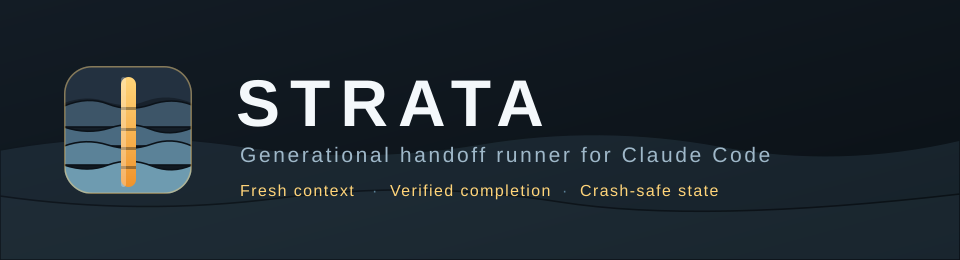

Strata
Every generation is a fresh context. Only a validated core sample crosses the boundary.
Generational handoff runner: executes a long coding task as a chain of fresh Claude Code processes that pass a validated, compacted handoff forward, with independent verification of completion and crash-safe state.
What it does
- Each generation is its own `claude -p` process — context never accumulates.
- Independent `--verify` commands overrule the agent's own completion claim.
- Atomic state: a killed host resumes from the last validated handoff.
- Stall detector, generation ceiling, turn cap and cost ceiling stop runaway loops.
Install
git clone https://github.com/BEKO2210/SkillQuarry.git
cd SkillQuarry/cli && ./install.sh
skillquarry info strata
skillquarry install strataInstallation verifies the checksum below before running the skill's own installer.
Quickstart
cd skills/autonomous/strata && ./install.sh
strata start "Fix the repository so lint and build pass without weakening checks." \
--verify "npm run lint" \
--verify "npm run build" \
--max-generations 20 \
--max-budget-usd 3Facts
| Category | Autonomous agents |
|---|---|
| Version | 1.0.0 |
| Quality | tested |
| License | Apache-2.0 |
| Agents | Claude Code |
| Platforms | linux, macos |
| Tests | 100 — 100% of runner.py executable lines |
| Needs installed | git, claude |
| Network access | indirect |
| Credentials | none |
| Writes outside the repository | no |
| Irreversible operations | none declared |
| Independently reviewed | Repository owner, 2026-08-13: live run against Claude Code 2.1.231, seven defects fixed before release. |
| Checksum | sha256:165f933f64dcf61d80569826365baba0c3f105abc351a493885b27b5762f280e |